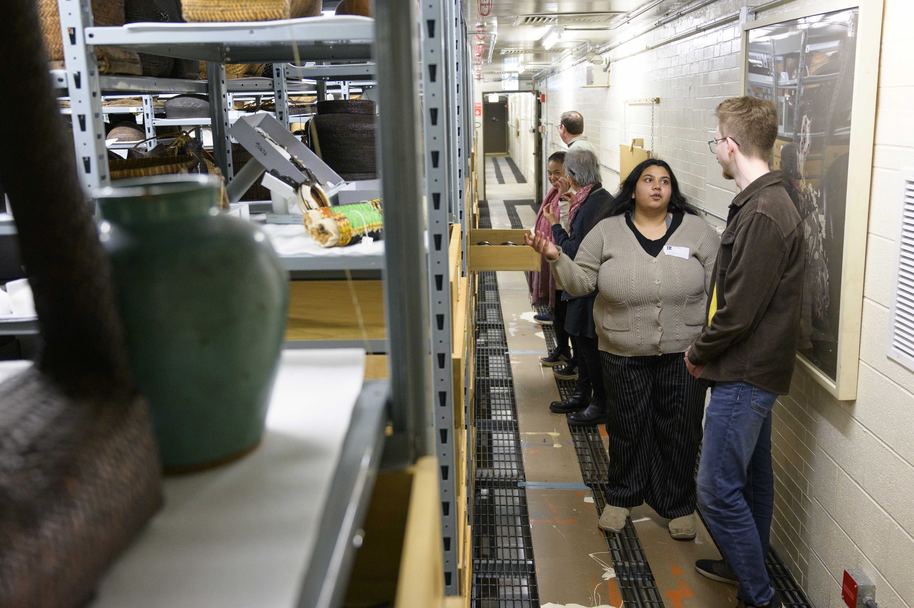
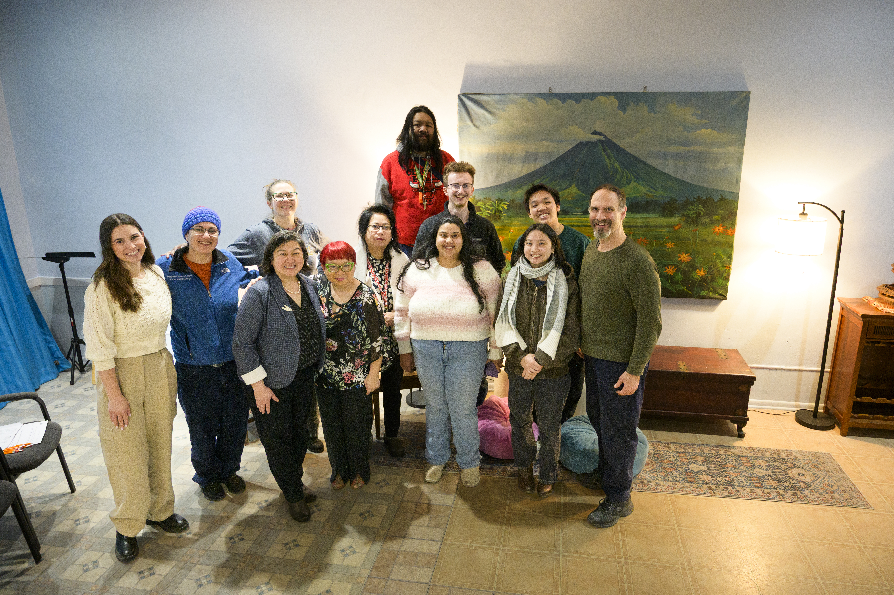
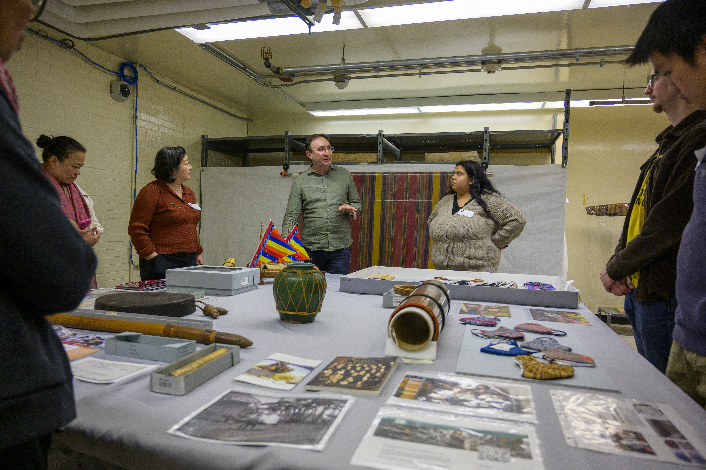
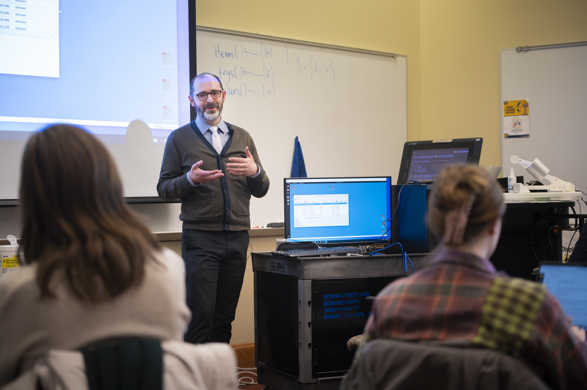
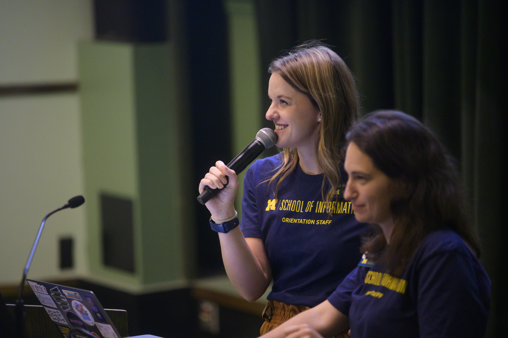

The Value of Navigating Friction & Active Execution
The middle of an engaged learning project is where real growth happens—and where real challenges surface. Real-world projects rarely follow a straight line. Requirements shift, team dynamics evolve, clients face unexpected internal constraints, and research data yields surprising results.
The true value of this phase lies in developing resilience, adaptability, and ethical agility. Learning to manage "scope creep," navigate mid-project feedback, and re-align technical decisions with human needs are the exact experiences that distinguish top UMSI graduates. When you view friction not as a barrier, but as a natural part of the applied learning process, you develop the strategic problem-solving skills needed in modern information careers.
Managing and executing in the field
Conducting research, tracking progress, and maintaining clear communication with project sponsors.
Focus & Objectives
-

Fieldwork & Research Methods
Apply human-centered design tools to observe contexts and extract insights.
-

Sponsor & Client Updates
Maintain transparency with regular progress reporting.
-

Feedback Loops
Gather, evaluate, and integrate constructive feedback mid-project.
Completing, Reflecting, and Translating Your Impact
Close your project responsibly, evaluate your outcomes, and articulate your real-world experience for your future career.
A project is not complete simply because the final deliverable has been handed over. The final stages—closing, reflecting, and translating—are what transform a transient project into lasting organizational value and personal career momentum.
Responsible handoffs ensure that partners are not left with abandoned tools or undocumented systems they cannot maintain. Simultaneously, structured reflection forces you to pause and ask: What did I learn about my technical skills, my teamwork style, and the ethical impact of my work? Without reflection, experience is just something that happened to you; with reflection, experience becomes expertise. Learning to translate complex, messy project narratives into clear resume bullets and portfolio case studies is what turns your UMSI education into your greatest professional asset.
Note for Student Developers: Select the track below that aligns best with your team's build goals.
Track A: Ending the Experience (Responsible Offboarding & Handoff)
Value & Narrative
Responsible offboarding is an ethical mandate in engaged learning. Delivering high-quality technical assets is only half the job—ensuring the community partner or client can independently maintain, update, and benefit from your work long after the semester ends is what defines a successful project.
Focus & Objectives
-
Completing & Transitioning Work
Package code, design files, reports, and technical assets into accessible, usable formats for your partner.
-
Closing Relationships Appropriately
Formally conclude the project with gratitude, clarity, and clear future boundaries.
-
Evaluating Impact
Measure project outcomes against initial scoping goals and gather client feedback.
Featured Resources & Handouts
Exiting a Community-Engaged Project Worksheet
Guided template for responsible project transition, asset delivery, and offboarding.
Project Scoping Handout & Terms (final review)
Re-evaluate final deliverables against original project commitments.
Ginsberg Center Student-Client Partnership Toolkit
Best practices for respectful closure with community organizations.
Track B: After the Experience (Career Integration & Portfolios)
Value & Narrative
Employers do not just hire technical skills—they hire people who can solve unscripted problems, collaborate in diverse teams, and deliver results under realistic constraints. This track guides you in bridging the gap between your academic work and your professional brand, helping you articulate the full narrative of your growth.
Focus & Objectives
-
Articulating Skills
Translate unscripted, complex project work into compelling resume bullets and interview responses.
-
Portfolio Integration
Document your process, artifacts, key decisions, and measurable outcomes.
-
Maintaining Networks
Keep professional touchpoints open with mentors, community partners, and teammates.
Featured Resources & Handouts

How to Include Project Experience on Student Resumes
Step-by-step guide to translating client/course projects into high-impact resume experience.

How to Engage with UMSI on Social Media
Best practices for sharing project milestones, tagging partners, and showcasing work publicly on LinkedIn.
STAR Method Project Reflection Sheet
Template to help you prep interview stories around teamwork, conflict, and technical problem-solving.